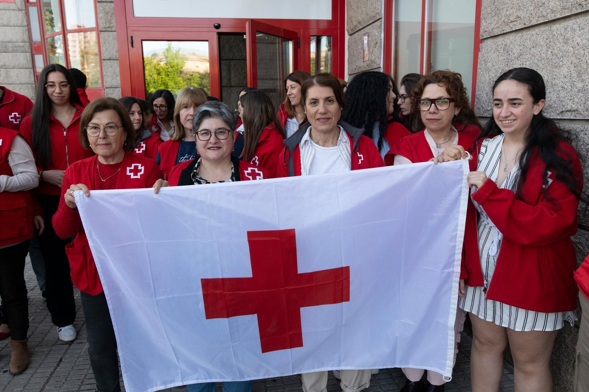

A Puertas Abiertas (A.P.A)
Organización solidaria dedicada a brindar ayuda humanitaria sin condiciones ni barreras.
Historia
A Puertas Abiertas nació como respuesta a las dificultades sociales que afectaron a miles de familias que carecían de acceso a recursos básicos como alimentos, vivienda y atención médica. Frente a esta realidad, un grupo de vecinos y voluntarios decidió actuar para brindar ayuda inmediata a quienes más lo necesitaban.
En el año 2005, la organización comenzó realizando campañas solidarias de recolección de alimentos, ropa y artículos de primera necesidad. Lo que empezó como una iniciativa local fue creciendo gracias al compromiso de sus voluntarios y al apoyo constante de la comunidad.
Con el paso de los años, A.P.A amplió sus actividades incorporando programas de asistencia alimentaria, acompañamiento social, apoyo educativo y acciones de integración comunitaria. Cada nuevo proyecto tuvo como objetivo no solo atender necesidades urgentes, sino también generar oportunidades para mejorar la calidad de vida de las personas.
Nuestro nombre simboliza nuestra misión: abrir las puertas a quienes necesitan ayuda. No importa su origen, su situación o su historia; creemos que toda persona merece ser escuchada, acompañada y tratada con dignidad.
Actualmente, A Puertas Abiertas continúa trabajando junto a voluntarios, instituciones y colaboradores que comparten la convicción de que la solidaridad es una herramienta fundamental para construir una sociedad más justa e inclusiva.
Nuestros Valores

Compromiso Humanitario
Actuamos con empatía y responsabilidad, brindando ayuda desinteresada a quienes más lo necesitan y buscando generar un impacto positivo en cada acción que realizamos.

Unidad
Promovemos el respeto, la inclusión y la igualdad de oportunidades para todas las personas, fortaleciendo el sentido de comunidad y cooperación.

Trabajo en Equipo
Creemos que la colaboración permite alcanzar soluciones más efectivas. Nuestros voluntarios trabajan juntos para multiplicar el impacto de cada iniciativa.